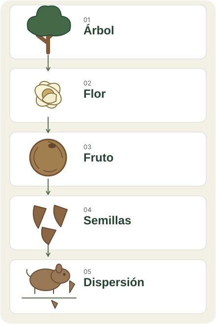

Bosque · fruto · personas
Castaña amazónica
Bertholletia excelsa
Una semilla que conecta el bosque de Madre de Dios con el trabajo de sus recolectores.
01 · Lo esencial
En 20 segundos
Dato destacado
10,2 millones de kgCastaña con cáscara registrada · Madre de Dios · 2023
SERFOR · dato preliminar, redondeado. Ver cifra exacta y fuente
- Dónde
- La castaña forma parte de los productos del bosque documentados para Madre de Dios. SERFOR · 2019
- Personas
- Recolectores y concesionarios participan en la cosecha de sus semillas. Thomas y colaboradores · 2017
- Por qué importa
- Su cadena de valor une el aprovechamiento de una semilla con la gestión del bosque que la produce. OSINFOR · 2024
02 · Para entender
Para entender
Del árbol a la cosecha: procesos naturales, trabajo y cuidado del territorio.
El árbol y su ciclo
La castaña es un árbol de la familia Lecythidaceae. Su fruto tiene una cubierta leñosa y contiene semillas de forma triangular que se aprovechan como alimento: un producto forestal no maderable .
SERFOR · guía de 2019 · ficha de castaña

Flores y polinización
En Itacoatiara, Amazonas, un estudio observó abejas grandes en las flores de castaña al investigar la polinización . Es un estudio de Brasil publicado en 2010; no un inventario de polinizadores de Madre de Dios.
Semillas y dispersión
En un experimento en la Amazonía central brasileña, roedores transportaron y enterraron semillas de castaña. Ese comportamiento ayuda a entender la dispersión: una semilla puede quedar lejos del lugar donde cayó.
El estudio también registró consumo y recuperación de semillas enterradas. Dispersarse no garantiza que una semilla llegue a ser un nuevo árbol.
Del bosque a la zafra
La zafra es la temporada de recolección. Los frutos caídos se abren para extraer semillas que aún tienen su propia cáscara. La cubierta del fruto y la cáscara de cada semilla son distintas.
Un estudio publicado en 2015 describe la recolección entre enero y abril en las concesiones de Madre de Dios estudiadas. Es una referencia histórica de ese trabajo, no el calendario de una campaña actual.
- Frutos caídos en el bosque
- Recolección y extracción de semillas con cáscara
- Pelado
- Comercialización
Personas y territorio
El bosque también se conoce a través de quienes trabajan en él. El estudio de Thomas y colaboradores documenta recolectores y concesionarios que cosechan por sí mismos o contratan a otras personas.
Concesión castañera, en pocas palabras
Una concesión permite aprovechar un recurso forestal mediante un contrato. En este caso, el recurso es la castaña. El derecho de aprovechamiento no convierte el terreno en propiedad del concesionario.
Ver definición técnica +
OSINFOR sitúa las concesiones castañeras entre las destinadas a productos forestales diferentes de la madera: recursos cuya extracción mantiene la cobertura boscosa. Es una síntesis de su documento técnico de 2024.
Manejo y conservación
Problema
OSINFOR describe invasiones, cambios de uso del suelo y superposición de derechos. Son presiones distintas. La extracción de madera requiere, además, evaluar sus efectos sobre los castañales.
Respuesta / gestión
El informe recomienda mejorar el catastro, fortalecer las capacidades de los titulares y acompañar la gestión forestal. Son recomendaciones de 2024, no medidas cuya ejecución esté comprobada aquí.
El estudio de Rockwell y colaboradores sobre producción y extracción de madera corresponde a las concesiones evaluadas; sus resultados no describen todos los castañales de la región.
OSINFOR · 2024 · páginas 26–35 · Rockwell y colaboradores · 2015
Términos para esta lectura
Los términos marcados con ⓘ abren una definición. También puedes leerlas aquí.
- Zafra
- Temporada de recolección de castaña.Rockwell y colaboradores · 2015
- Concesión castañera
- Derecho de aprovechamiento forestal otorgado mediante contrato; no equivale a la propiedad del terreno.OSINFOR · 2024
- Producto forestal no maderable
- Producto del bosque diferente de la madera, como las semillas de castaña.SERFOR · 2019
- Polinización
- Transferencia de polen a la parte receptora de una flor. El estudio citado examina la participación de abejas en las flores de castaña.Santos y Absy · 2010
03 · Datos y evidencia
Datos y evidencia
Consulta los datos, documentos y criterios utilizados en esta ficha.
Dos registros, dos categorías
No se suman ni permiten calcular un rendimiento de pelado: son categorías distintas del anuario.
Producción registrada
Castaña con cáscara
10 156 532,82 kg
Madre de Dios · año del dato: 2023
SERFOR · Tabla 40 · documento publicado en 2024. Información preliminar.
Ver ficha del dato ↓Producción registrada
Castaña pelada
3 903 605,76 kg
Madre de Dios · año del dato: 2023
SERFOR · Tabla 40 · documento publicado en 2024. Información preliminar.
Ver ficha del dato ↓El año del dato indica el periodo registrado. La publicación identifica cuándo apareció el documento; la revisión EcoSelva corresponde a la comprobación editorial de esta ficha.
Producción registrada: tres años disponibles en esta ficha
| Año del dato | Valor (kg) | Fuente original |
|---|---|---|
| 2021 | 8 638 185 | SERFOR · Cuadro 35 · publicación 2022 Ver ficha del dato |
| 2022 | 14 447 374,26 | SERFOR · Tabla 39 · publicación 2023 Ver ficha del dato |
| 2023 | 10 156 532,82 | SERFOR · Tabla 40 · publicación 2024 Ver ficha del dato |
Selección de registros preliminares de SERFOR. No equivale a un censo de toda la cosecha. Con tres observaciones, esta ficha presenta una tabla; el criterio editorial exige al menos cuatro observaciones comparables para un gráfico.
¿Por qué aparecen cifras diferentes?
El anuario de 2021 contiene un registro regional y otro nacional de castaña con cáscara. Conservamos los dos valores tal como aparecen, sin atribuir la diferencia a una causa no documentada.
Madre de Dios
- Fuente
- SERFOR · Cuadro 35 · publicación 2022
- Año del dato
- 2021
- Valor
- 8 638 185 kg
- Ámbito
- Madre de Dios
- Nota
- Tabla regional; precisión original conservada. Consultar registro
Perú
- Fuente
- SERFOR · Cuadro 36 · publicación 2022
- Año del dato
- 2021
- Valor
- 8 638 185,12 kg
- Ámbito
- Perú
- Nota
- Tabla nacional; se mantiene fuera de la serie regional. Consultar registro
Las fuentes utilizan fechas o alcances distintos y EcoSelva no las considera directamente equivalentes sin documentación adicional.
Consultar cada registro
Definición, periodo, cobertura, documento original, método conocido y limitaciones para los cinco registros de esta selección.
Ver ficha del dato · Madre de Dios · 2021 · con cáscara
- Indicador
- Producción registrada de castaña con cáscara
- Definición
- Cantidad de castaña con cáscara consignada por SERFOR en Cuadro 35 para Madre de Dios y el año 2021.
- Valor
- 8 638 185
- Unidad
- kg
- Periodo del dato
- 2021
- Cobertura espacial
- Madre de Dios
- Fuente
- SERFOR
- Documento
- Anuario Forestal y de Fauna Silvestre 2021 · publicado en 2022 · Cuadro 35
- Enlace original
- Repositorio institucional ↗ · Tabla en el PDF ↗
- Metodología conocida
- Compilación de registros informados por GORES y ATFFS; compilación SERFOR. La tabla identifica las autoridades informantes y califica la información como preliminar; no detalla en ella el protocolo de levantamiento.
- Autoridades informantes
- GORES y ATFFS; compilación SERFOR
- Limitaciones
- Información preliminar según la fuente. Producción registrada; no equivale a un censo de toda la cosecha. Categoría castaña con cáscara; no incluye la categoría castaña pelada. Se conserva la precisión de la tabla regional original.
- Fecha de revisión EcoSelva
Ver ficha del dato · Madre de Dios · 2022 · con cáscara
- Indicador
- Producción registrada de castaña con cáscara
- Definición
- Cantidad de castaña con cáscara consignada por SERFOR en Tabla 39 para Madre de Dios y el año 2022.
- Valor
- 14 447 374,26
- Unidad
- kg
- Periodo del dato
- 2022
- Cobertura espacial
- Madre de Dios
- Fuente
- SERFOR
- Documento
- Anuario Forestal y de Fauna Silvestre 2022 · publicado en 2023 · Tabla 39
- Enlace original
- Repositorio institucional ↗ · Tabla en el PDF ↗
- Metodología conocida
- Compilación de registros informados por Autoridades Regionales Forestales y de Fauna Silvestre (ARFFS); compilación SERFOR. La tabla identifica las autoridades informantes y califica la información como preliminar; no detalla en ella el protocolo de levantamiento.
- Autoridades informantes
- Autoridades Regionales Forestales y de Fauna Silvestre (ARFFS); compilación SERFOR
- Limitaciones
- Información preliminar según la fuente. Producción registrada; no equivale a un censo de toda la cosecha. Categoría castaña con cáscara; no incluye la categoría castaña pelada. Se conserva la precisión de la tabla regional original.
- Fecha de revisión EcoSelva
Ver ficha del dato · Madre de Dios · 2023 · con cáscara
- Indicador
- Producción registrada de castaña con cáscara
- Definición
- Cantidad de castaña con cáscara consignada por SERFOR en Tabla 40 para Madre de Dios y el año 2023.
- Valor
- 10 156 532,82
- Unidad
- kg
- Periodo del dato
- 2023
- Cobertura espacial
- Madre de Dios
- Fuente
- SERFOR
- Documento
- Anuario Forestal y de Fauna Silvestre 2023 · publicado en 2024 · Tabla 40
- Enlace original
- Repositorio institucional ↗ · Tabla en el PDF ↗
- Metodología conocida
- Compilación de registros informados por Autoridades Regionales Forestales y de Fauna Silvestre (ARFFS); compilación SERFOR. La tabla identifica las autoridades informantes y califica la información como preliminar; no detalla en ella el protocolo de levantamiento.
- Autoridades informantes
- Autoridades Regionales Forestales y de Fauna Silvestre (ARFFS); compilación SERFOR
- Limitaciones
- Información preliminar según la fuente. Producción registrada; no equivale a un censo de toda la cosecha. Categoría castaña con cáscara; no incluye la categoría castaña pelada. Se conserva la precisión de la tabla regional original.
- Fecha de revisión EcoSelva
Ver ficha del dato · Perú · 2021 · con cáscara
- Indicador
- Producción registrada de castaña con cáscara
- Definición
- Cantidad de castaña con cáscara consignada por SERFOR en Cuadro 36 para Perú y el año 2021.
- Valor
- 8 638 185,12
- Unidad
- kg
- Periodo del dato
- 2021
- Cobertura espacial
- Perú
- Fuente
- SERFOR
- Documento
- Anuario Forestal y de Fauna Silvestre 2021 · publicado en 2022 · Cuadro 36
- Enlace original
- Repositorio institucional ↗ · Tabla en el PDF ↗
- Metodología conocida
- Compilación de registros informados por GORES y ATFFS; compilación SERFOR. La tabla identifica las autoridades informantes y califica la información como preliminar; no detalla en ella el protocolo de levantamiento.
- Autoridades informantes
- GORES y ATFFS; compilación SERFOR
- Limitaciones
- Información preliminar según la fuente. Producción registrada; no equivale a un censo de toda la cosecha. Ámbito nacional. No se incorpora a la serie regional ni se sustituye con este valor el del Cuadro 35.
- Fecha de revisión EcoSelva
Ver ficha del dato · Madre de Dios · 2023 · pelada
- Indicador
- Producción registrada de castaña pelada
- Definición
- Cantidad de castaña pelada consignada por SERFOR en Tabla 40 para Madre de Dios y el año 2023.
- Valor
- 3 903 605,76
- Unidad
- kg
- Periodo del dato
- 2023
- Cobertura espacial
- Madre de Dios
- Fuente
- SERFOR
- Documento
- Anuario Forestal y de Fauna Silvestre 2023 · publicado en 2024 · Tabla 40
- Enlace original
- Repositorio institucional ↗ · Tabla en el PDF ↗
- Metodología conocida
- Compilación de registros informados por Autoridades Regionales Forestales y de Fauna Silvestre (ARFFS); compilación SERFOR. La tabla identifica las autoridades informantes y califica la información como preliminar; no detalla en ella el protocolo de levantamiento.
- Autoridades informantes
- Autoridades Regionales Forestales y de Fauna Silvestre (ARFFS); compilación SERFOR
- Limitaciones
- Información preliminar según la fuente. Producción registrada; no equivale a un censo de toda la cosecha. Categoría castaña pelada. No sumar a castaña con cáscara ni utilizar ambas categorías para calcular un rendimiento de pelado.
- Fecha de revisión EcoSelva
Cinco registros numéricos transcritos con su procedencia y precisión original; coinciden con las fichas del dato. Se distribuyen los hechos seleccionados, no las tablas completas ni el diseño de los documentos.
Documentos y estudios
Fuentes primarias · Madre de Dios
Documentos oficiales y estudios originales que sostienen el contenido regional.
Informe oficial
SERFOR
Anuario Forestal y de Fauna Silvestre 2021
Publicación: 2022 · Perú · tablas de Madre de Dios
Por qué lo usamos: Registros de producción de 2021; conserva categoría, ámbito, precisión y carácter preliminar.
Informe oficial
SERFOR
Anuario Forestal y de Fauna Silvestre 2022
Publicación: 2023 · Perú · tablas de Madre de Dios
Por qué lo usamos: Registros de producción de 2022; conserva categoría, ámbito, precisión y carácter preliminar.
Informe oficial
SERFOR
Anuario Forestal y de Fauna Silvestre 2023
Publicación: 2024 · Perú · tablas de Madre de Dios
Por qué lo usamos: Registros de producción de 2023; conserva categoría, ámbito, precisión y carácter preliminar.
Documento técnico
SERFOR
Guía de Productos Forestales no Maderables en Madre de Dios
Publicación: 2019 · Madre de Dios
Por qué lo usamos: Descripción botánica y uso de la semilla; ficha de castaña, página 92.
Documento técnico
OSINFOR
Análisis del aprovechamiento de madera en concesiones para castaña en Madre de Dios
Publicación: 2024 · Madre de Dios
Por qué lo usamos: Cadena de valor, concesiones y recomendaciones de gestión; páginas 10–15 y 26–35.
Artículo científico
Cara A. Rockwell y colaboradores
Nut Production in Bertholletia excelsa across a Logged Forest Mosaic: Implications for Multiple Forest Use
Publicación: 2015 · Concesiones estudiadas en Madre de Dios
Por qué lo usamos: Recolección y efectos de la extracción de madera en el contexto estudiado.
Artículo científico
Evert Thomas y colaboradores
NTFP harvesters as citizen scientists: Validating traditional and crowdsourced knowledge on seed production of Brazil nut trees in the Peruvian Amazon
Publicación: 2017 · Madre de Dios · entrevistas de 2012
Por qué lo usamos: Recolección, participación de castañeros y contraste de conocimiento local con mediciones.
Lectura complementaria · Brasil
Estudios originales para entender procesos biológicos. Su ámbito no es Madre de Dios.
Artículo científico
Charles F. Santos y Maria L. Absy
Polinizadores de Bertholletia excelsa (Lecythidales: Lecythidaceae): interações com abelhas sem ferrão (Apidae: Meliponini) e nicho trófico
Publicación: 2010 · Itacoatiara, Amazonas · Brasil
Por qué lo usamos: Interacción entre flores y abejas; contexto biológico, sin extrapolar un inventario regional.
Artículo científico
Joanne M. Tuck Haugaasen y colaboradores
Seed dispersal of the Brazil nut tree (Bertholletia excelsa) by scatter-hoarding rodents in a central amazonian forest
Publicación: 2010 · Amazonía central · Brasil
Por qué lo usamos: Experimento de transporte y enterramiento de semillas; resumen original en el repositorio de UEA.